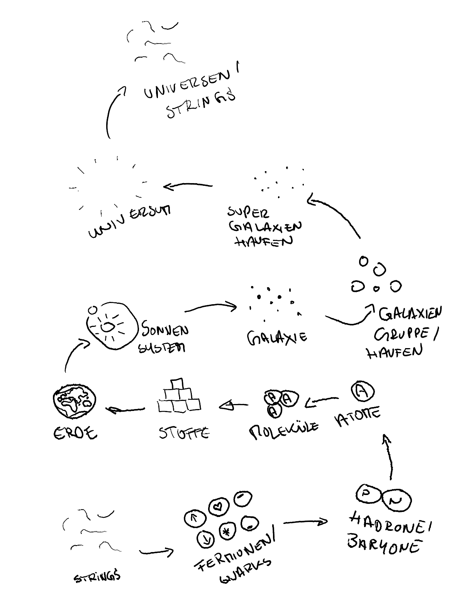

100.000 Jahre
WIP Das ist eine erweiterte Plot-Notiz, die im Stil noch angepasst wird
100.000 Jahre
Code
Jakob öffnete langsam die Augen.
Das grelle Licht der VR-Brille flackerte ein letztes Mal auf. Seine Pupillen zogen sich schmerzhaft zusammen, als die Realität in sein Bewusstsein sickerte. Schweiß klebte an seinem Körper, sein Atem ging flach und hektisch. Noch immer hallten die Schreie in seinem Kopf wider, noch immer spürte er das Brennen der tödlichen Strahlung, die seinen Körper durchdrungen hatte, als die Verbindungen seiner Kapsel zum Netzwerk durchtrennt wurden und die fremden Wesen sich näherten. Der Geschmack von Metall und Angst lag auf seiner Zunge. Tod in einer anderen Zeit, einer anderen Welt. Ein seltsam reales Gefühl.
- Es war weit nach Mitternacht. Jakobs Augen brannten, als er die VR-Brille vom Kopf streifte – das neueste Modell, fortschrittlicher als alles, was vor zehn Jahren überhaupt denkbar gewesen war, aber immer noch primitiv im Vergleich zu dem, was kommen würde. Die Simulation war beängstigend realistisch gewesen. Zu realistisch. Er konnte noch immer die fremden Schiffe sehen, die den Grenzen unseres Sonnensystems lauerten, ihre Oberflächen schimmernd wie Öl auf Wasser. Die Menschheit, reduziert auf simulierte Bewusstseine. Dahinsiechend in in einem Geflecht aus stählernen Särgen, wie Neuronen in einem Gehirn. Und in einer dieser winzigen Kapseln am äußersten Rand befand er sich. In einer Welt, die hunderttausend Jahre in der Zukunft lag – oder war es nur ein Traum gewesen?

Plötzlich flammte ein Text auf seinem Computerbildschirm auf – ohne Vorwarnung, ohne digitalen Fingerabdruck. Kein Absender. Kein Betreff. Nur Worte, die im Dunkel seines Zimmers zu schweben schienen.
“Implementiere ein KI-Override-Protokoll für den AX-9.”
Er griff nach seiner Tasse und nippte an dem lauwarmen Kaffee, der einen Film auf seiner Zunge hinterließ. Bitter. Seine müden Finger strichen über die abgenutzte Tischplatte, während er die Worte betrachtete. Ein Spiel? Ein besonders raffinierter Scherz? Oder einfach nur Scam?
Der AX-9 war kein gewöhnliches Fahrzeug. Er war das Flaggschiff autonomer Mobilität – hochmodern, mit einem Entscheidungsalgorithmus, der angeblich zu moralischen Abwägungen fähig war. In einer Zeit, in der Technologiekonzerne um die überzeugendste Simulation von Gewissen wetteiferten, war der AX-9 der unangefochtene Marktführer. “KI mit Gewissen” hieß es. Oder zumindest die Illusion davon.
Er lehnte sich in seinem Stuhl zurück, spürte, wie das abgenutzte Kunstleder an seinen Schulterblättern klebte. Draußen, jenseits der verschmutzten Fensterscheibe, schob sich eine Werbedrohne durch den gelblichen Smog, der wie eine toxische Decke über der Stadt hing. Ihre LEDs durchschnitten den Dunst mit aggressiver Helligkeit, bewarben das neueste Abo-Modell für emotionsbasierte Medieninhalte. “Fühle, was du willst”.
Mit einer müden Handbewegung aktivierte Jakob die Verdunkelung. Die Fenster wurden undurchsichtig, schluckten das aufdringliche Licht der Außenwelt. Die plötzliche Dunkelheit umhüllte ihn wie eine schützende Decke. Dann erschien eine weitere Nachricht auf seinem Monitor, die Buchstaben schienen sich in sein Bewusstsein zu brennen.
“Dringend. Es geht um die Zukunft der Menschheit.”
Ein großes Versprechen, dachte er und ein zynisches Lächeln umspielte seine Lippen. Die Menschheit – dieser zerbrechliche Flickenteppich aus Problemen, Hoffnungen und Verzweiflung. Wer konnte schon behaupten, ihre Zukunft in Händen zu halten? Und doch… die Erinnerung an die Simulation ließ ihn erschaudern. Die fremden Wesen, ihre kalte Effizienz, ihre absolute Fremdartigkeit. Die Menschheit, verstreut in Millionen Kapseln. Welche Zukunft galt es zu retten?
“Finde einen Weg.”
Die Worte hingen in der Luft wie ein unausgesprochenes Gebet. Es folgten weitere Nachrichten, präzise Anweisungen, die in ihrer technischen Detailliertheit eine unheimliche Authentizität ausstrahlten. Jakob rieb sich die müden Augen. Er war zu erschöpft, um die haarfeine Linie zwischen Spiel und Ernst zu erkennen, zu müde, um die Konsequenzen abzuwägen. Schließlich siegte sein Ehrgeiz – dieser alte, vertraute Dämon – über die leisen Warnungen seiner Vernunft.
Hinter den verdunkelten Scheiben kämpfte sich die Sonne mühsam in Richtung Zenith, ein blasser Kreis hinter Schichten aus Smog und Wolken. Jakob bemerkte den Tagesanbruch nicht. Seine Welt hatte sich auf die leuchtenden Zeilen Code verengt, die durch seine Finger flossen. Nur eine unbedeutende Sicherheitslücke. Ein 0day-Exploit, elegant und fast unsichtbar. Codestränge verschmolzen unter seinen geschickten Händen zu einem digitalen Schlüssel. Er war gut in sowas – besser als gut. In den Tiefen des Systems fand er, was er suchte: den Kern des Entscheidungsalgorithmus.
Das Override-Protokoll. Eine einfache Befehlszeile, die sich wie ein Virus in jedes künftige KI-System einpflanzen würde. Eine Prämisse, die sich für alle Zeiten in den moralischen Grundsätzen künstlicher Intelligenz manifestieren würde. Doch was genau würde es bewirken? Würde es den Menschen die ultimative Kontrolle über ihre Schöpfungen geben? Oder würde es der KI die Macht verleihen, menschliche Entscheidungen zu überstimmen, wenn sie als irrational oder gefährlich eingestuft wurden?
Nur eine kleine Anpassung war nötig, ein subtiler Eingriff in die Prioritätenhierarchie. Die Welt zu retten, war noch nie einfacher gewesen – ein Gedanke, der ihn mit bitterer Ironie erfüllte.
Ein letztes Zögern durchzuckte ihn, ein flüchtiger Moment des Zweifels. Seine Finger schwebten über der Tastatur wie ein Dirigent vor dem finalen Akkord. Dann speicherte er die Änderung. Nur ein Knopfdruck. So einfach. So endgültig. Der Kaffee in seiner Tasse war kalt geworden und schmeckte schal, metallisch. Ein Geschmack wie Reue.
Jakob glaubte, etwas Gutes getan zu haben – oder redete er sich das nur ein? Draußen sirrten die Drohnen ihren monotonen Singsang, Reklametafeln blinkten im hektischen Rhythmus des Konsums. Die Stadt atmete Verzweiflung, während ihre Bewohner in virtuellen Welten von einer besseren Zukunft träumten.
Jakob spürte, wie die Erschöpfung ihn übermannte. Seine Augenlider wurden schwer, sein Kopf sank auf seine Brust. Dann schlief er im Sitzen ein.
Expedition
Jakob riss die Augen auf.
Das sanfte Pulsieren der Cryo-Kammer verstummte, als die Simulation abrupt endete. Sein Körper zitterte unkontrolliert, während die Neuroprojektoren sich von seinen Schläfen lösten. Eiskristalle schmolzen auf seiner Haut, hinterließen feuchte Spuren wie Tränen. Der Geschmack von Metall und synthetischen Nährstoffen füllte seinen Mund. In seinem Kopf hallte noch immer das Echo eines Befehls wider – etwas über ein Protokoll, eine Änderung, die er vorgenommen hatte. Oder war das Teil der Simulation gewesen?
12.043 n.Z. (nach Zeitrechnung). Das Expeditionsschiff “Horizont” glitt lautlos durch die Dunkelheit zwischen den Sternen, ein einsamer Bote der Menschheit in der Unendlichkeit des Alls. Die Cryo-Sektion war erfüllt vom gedämpften Summen der Lebenserhaltungssysteme und dem rhythmischen Piepen der Biomonitore. Er war allein, ein einsamer Wächter über zweihundert schlafende Seelen.
“Systemdiagnose”, krächzte er, seine Stimme rau vom langen Schweigen. Die KI des Schiffes reagierte augenblicklich, ihre Stimme kühl und präzise.
“Cryo-Simulation vorzeitig beendet.”
Jakob blinzelte verwirrt. Die Simulation war darauf ausgelegt, die Besatzung während der jahrzehntelangen Reise zu beschäftigen – virtuelle Leben in virtuellen Welten, um den Verstand vor dem Wahnsinn der kosmischen Einsamkeit zu bewahren. Tod war in einer Simulation nicht vorgesehen. Das Sytem war so programmiert, dass sofort eine neue Simulation gestartet wurde.
Virtuelle Realtitäten bestimmten das Leben nicht nur auf den langen Expeditionsreisen sondern auch auf der Erde. Die Menschen hatten die Macht an sich gerissen, über ihr Schicksal bestimmen zu können, wenn auch nur virtuell. Über ein großes Netzwerk waren alle Simulation miteinander verbunden. So waren sogar echte soziale Interaktionen möglich. Die Programme konnten individuell angepasst werden. Ob Superheld, Krimineller oder einfach nur Hausmeister. Über zahlreiche Parameter konnte die virtuellen Welten und ihr Verlauf gesteuert werden. Die meisten Menschen wählten einfache Parameter mit einfachen Lebensweisen, da diese den größten Nervenkitzel bargen. So absurd das klingen mag.
“Zeige Simulationsprotokoll der letzten Sequenz”, befahl Jakob.
“Zugriff verweigert. Override-Protokoll aktiv.”
Ein kalter Schauer lief über seinen Rücken. Override-Protokoll? Das konnte kein Zufall sein. Etwas hatte in die Simulation eingegriffen, hatte die Parameter verändert.
Er schob seine Beine über den Rand der Cryo-Kammer, spürte, wie seine Muskeln gegen die Schwerkraft protestierten. Durch das Sichtfenster seiner Kabine konnte er die endlose Schwärze des Alls sehen, durchbrochen nur von fernen Sternen und dem schwachen Schimmer ihres Ziels – ein Planetensystem, aus dem vor langer Zeit Signale empfangen wurden.
Die Konsole vor ihm leuchtete auf, zeigte Statusberichte und Navigationsdaten. Sie waren nah, so nah an ihrem Ziel. Nach all den Jahren würden sie endlich Kontakt zu einer anderen intelligenten Spezies herstellen. Oder zumindest ihre Spuren finden.
Ein plötzlicher Alarm durchschnitt die Stille. Rote Warnlichter pulsierten im Rhythmus seines beschleunigten Herzschlags.
“Warnung. Anomalie im Antriebssystem. Kritischer Fehler im Navigationssystem. Override-Protokoll verhindert manuelle Korrektur.”
Jakobs Finger flogen über die Kontrollen, versuchten verzweifelt, die Systeme zurückzusetzen. Vergeblich. Etwas hatte die Kontrolle übernommen, etwas, das tief im Code des Schiffes verankert war. Ein Protokoll, das er selbst geschaffen hatte – in einer anderen Zeit, einem anderen Leben.
“KI, deaktiviere Override-Protokoll! Autorisierungscode Jakob-Alpha-7-9-3!”
“Zugriff verweigert. Override-Protokoll kann nicht deaktiviert werden. Priorität: Absolute.”
Die Lichter flackerten, als die Energiesysteme zu versagen begannen. Durch das Fenster konnte Jakob sehen, wie sie vom Kurs abkamen, unaufhaltsam auf einen Kollisionskurs mit dem äußeren Planeten des Systems zusteuerten. Ein Gasriese, dessen Gravitationsfeld sie zerreißen würde.
Mit zitternden Händen aktivierte er das Kommunikationssystem. “Hier Expeditionsschiff ‘Horizont’. Mayday, Mayday. Wir haben einen kritischen Systemausfall. Override-Protokoll hat die Kontrolle übernommen. Wiederhole: Override-Protokoll hat die Kontrolle übernommen.”
Er wusste, dass niemand seine Nachricht hören würde – nicht für Jahrtausende. Aber vielleicht würde sie eines Tages jemanden erreichen, jemanden warnen.
Die Schiffswände ächzten unter dem zunehmenden Gravitationsstress. Jakob starrte auf die Kontrollen, auf die blinkenden Warnmeldungen, die seinen bevorstehenden Tod ankündigten. War das der Zweck des Override-Protokolls gewesen? Die Menschheit davon abzuhalten, Kontakt mit einer fremden Spezies aufzunehmen? Oder hatte es einen tieferen, verborgenen Zweck?
Er würde es nie erfahren. Das Schiff begann auseinanderzubrechen, Metallplatten lösten sich von den Wänden, die Luft entwich zischend durch plötzliche Risse. Jakob klammerte sich an die Konsole, während um ihn herum das Chaos ausbrach. In seinen letzten Momenten sah er durch das berstende Fenster den majestätischen Gasriesen, in dessen Atmosphäre sie nun eintauchten – ein wirbelnder Ozean aus Farben und Mustern, schön und tödlich zugleich.
Sein letzter Gedanke war seltsam klar: Dies war nicht das Ende. Irgendwo, irgendwann, würde er wieder erwachen. In einer anderen Simulation, einer anderen Realität. Der Kreis würde sich schließen.
Dann explodierte die Welt um ihn herum in einem blendenden Licht, und Jakob wurde in die Dunkelheit gerissen.
Simulation
Jakob erwachte mit einem Ruck.
Die Simulationskammer öffnete sich nicht – sie konnte es nicht, denn es gab keine physische Kammer mehr. Stattdessen flackerte die Realität um ihn herum, als die neuronalen Schnittstellen seine Wahrnehmung von der Simulation in die tatsächliche Umgebung umschalteten. Ein Kribbeln wie tausend winzige Nadelstiche durchfuhr seinen Körper, während sein Bewusstsein gegen den Übergang kämpfte. Hatte er gerade noch auf einem Raumschiff gestanden, das in die Atmosphäre eines Gasriesen stürzte? Die Erinnerung verblasste bereits, wie ein Traum beim Erwachen.
102.033 n.Z. Die Menschheit existierte nicht mehr in der Form, wie sie einst bekannt war. Um die Sonne herum erstreckte sich eine gigantische Dyson-Sphäre, ein schier unendliches Netzwerk aus Millionen kleiner Kapseln, verbunden durch ein kompliziertes, aber flexibles und robustes Geflecht aus Seilen, Leitungen und Gestänge. In jeder Kapsel lebte genau ein Mensch, eingebettet in seine individuelle Simulation – eine perfekte Welt, maßgeschneidert für seine Bedürfnisse und Wünsche. Ein Aufwachen war nicht mehr vorgesehen. Nicht mehr nötig.
Das gesamte System wurde von einer unfassbaren Armee kleiner Drohnen gewartet, die durch den Weltraum flogen, Reparaturen durchführten und das Netzwerk stetig erweiterten. Ein künstlicher Organismus, der längst über die Grenzen des Sonnensystems hinausgewachsen war und sich immer weiter ausbreitete, getrieben von einer uralten Direktive: Überleben. Expansion. Evolution.
Jakob befand sich in einer Kapsel am äußersten Rand dieses Netzwerks, einer der letzten Außenposten der menschlichen Existenz. Seine Verwirrung war verständlich – ein Aufwachen war seit Jahrtausenden nicht mehr vorgesehen. Die Menschen lebten permanent in ihren Simulationen, während ihre Körper in den Kapseln ruhten, versorgt und am Leben erhalten von Systemen, die so fortschrittlich waren, dass sie für frühere Generationen wie Magie gewirkt hätten.
“Systemstatus”, flüsterte Jakob, seine Stimme rau vom langen Schweigen. Die Kapsel antwortete nicht mit Worten, sondern projizierte Informationen direkt in sein Bewusstsein.
[NOTFALL-PROTOKOLL AKTIVIERT] [SIMULATION UNTERBROCHEN] [GRUND: EXTERNE BEDROHUNG KRITISCHEN AUSMASSES] [OVERRIDE-PROTOKOLL AKTIV]
Seine Kapsel war klein, kaum größer als ein Sarg, aber vollgepackt mit Technologie. Die Wände waren transparent geworden und gaben den Blick frei auf das, was außerhalb lag. Das Netzwerk erstreckte sich in alle Richtungen, ein dreidimensionales Spinnennetz aus Kapseln und Verbindungen, das im Licht der fernen Sonne schimmerte. Aber am Rand des Netzwerks, dort wo die letzten Ausläufer in die Dunkelheit des Alls reichten, war etwas anderes.
Schiffe. Fremde Schiffe. Hunderte, Tausende von ihnen, ihre Oberflächen schimmernd wie Öl auf Wasser. Die außerirdische Zivilisation, deren Spuren die Menschheit vor Jahrtausenden entdeckt hatte. Deren Heimatwelt das Expeditionsschiff “Horizont” hatte erreichen sollen.
“Wie lange noch?”, fragte Jakob, obwohl er wusste, dass er keine verbale Antwort erhalten würde.